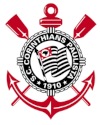

Historia do corinthians
1910 A Fundação
Às 20h30 do dia 1º de setembro, à luz de um lampião, na esquina das ruas José Paulino e Cônego Martins, no bairro do Bom Retiro, o grupo de operários formado por Anselmo Corrêa, Antônio Pereira, Carlos Silva, Joaquim Ambrósio e Raphael Perrone fundaram o Sport Club Corinthians Paulista. Com mais oito rapazes, foi formada a reunião dos primeiros integrantes e sócio-fundadores do Timão, que teve seu nome inspirado na equipe inglesa Corinthian-Casuals Football Club, que fazia excursão pelo Brasil. O presidente escolhido por eles foi o alfaiate Miguel Battaglia, que, já no primeiro momento, afirmou: “O Corinthians vai ser o time do povo e o povo é quem vai fazer o time”. Um terreno alugado na Rua José Paulino foi aplainado, virou campo e foi lá que, já no dia 14 de setembro, o primeiro treino foi realizado diante de uma plateia entusiasmada, que garantiu: “Este veio para ficar!”.
1990 Campeao Brasileiro
No dia 16 de dezembro, o Timão levantou o troféu de campeão brasileiro pela primeira vez na história. Com 23 gols marcados em 25 partidas, a equipe do técnico Nelsinho Baptista venceu o São Paulo por 1 a 0 no último jogo, realizado no Morumbi. Neto marcou nove dos 23 gols, cinco em venenosas cobranças de falta. A escalação do time no dia da grande final foi: Ronaldo, Giba, Marcelo, Guinei e Jacenir; Márcio, Wilson Mano e Tupãzinho; Neto, Fabinho e Mauro.
2012 o ano inesquecível
Pela primeira vez na história, o Corinthians foi campeão da Libertadores. E, para ser perfeito, de forma invicta! Foram 22 gols marcados e apenas quatro sofridos em oito vitórias e seis empates. O atacante Emerson marcou os gols da vitória por 2 a 0 contra o Boca Juniors (ARG) no jogo de volta da grande final. A escalação da partida foi: Cássio, Alessandro, Chicão, Leandro Castán e Fábio Santos; Ralf, Paulinho, Danilo e Alex; Jorge Henrique e Emerson. O gol de cabeça Paulinho contra o Vasco, que levou o Corinthians às semifinais da Libertadores, já é considerado por muitos o mais marcante da história do clube. Além disso, o Timão conquistou a Copinha também de forma invicta e teve um atleta medalhista olímpico em Londres. O nadador Thiago Pereira ficou com a prata nos 400m medley. Em dezembro, o Bando de Loucos invadiu o Japão e viu o Corinthians conquistar o Mundial de Clubes da Fifa pela segunda vez. Guerrero marcou de cabeça e garantiu o título contra o Chelsea no ano que se tornou inesquecível para a Fiel Torcida.